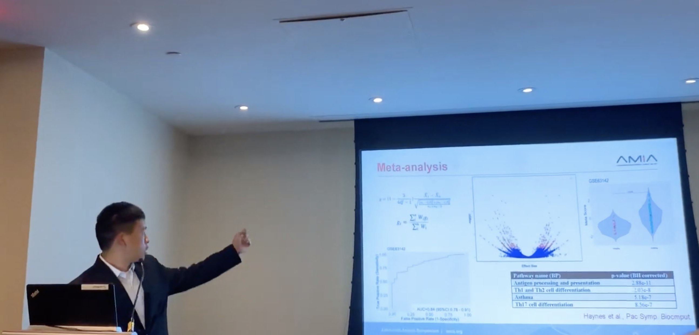

I offer private tutoring for physics and math. I teach the following:
School Stuff (lower rate): AP Physics 1, 2, C Mechanics, C E/M; College-prep Math, AP Calculus, AP Stats, LinAlg, DiffEq's
Competition Stuff (higher): AMC 8, AMC 10/12, F=ma
In terms of scheduling, I typically tutor in the 8AM - 4 PM window on both Saturdays and Sundays. My availability is dependent on when I tutor my other students, and appointments are typically made first-come-first-serve the week before.
For Monta Vista students, I also do free tutorial sessions (generally geared towards AP Physics 1 students) during the week. One can also book appointments with me during that time period.
If you would like to contact me about any of this, email me